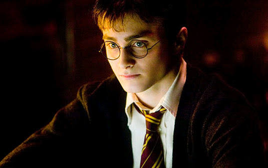
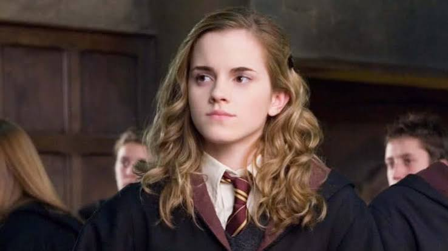
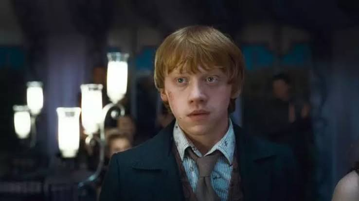
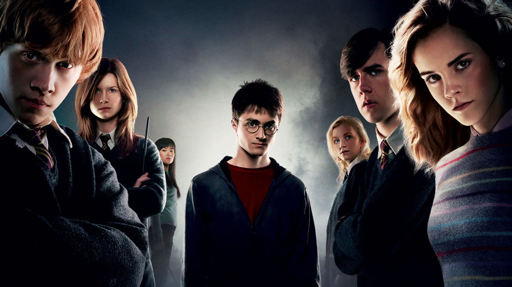

Sinopse
Harry Potter (Daniel Radcliffe) retorna à Escola de Magia e Bruxaria de Hogwarts, para cursar o 5º ano letivo. Logo ele descobre que boa parte da comunidade bruxa foi levada a acreditar que o retorno de Voldemort (Ralph Fiennes) foi uma mentira inventada por Harry, o que põe sua credibilidade em dúvida. Além disto, o Ministro da Magia Cornélio Fudge (Robert Hardy) impõe à escola a presença de Dolores Umbridge (Imelda Staunton), que torna-se a nova professora de Defesa Contra as Artes das Trevas.
Acontece que as aulas de Umbridge, apesar de aprovadas pelo ministério, abrangem apenas temas amenos, deixando os alunos despreparados para os perigos dos dias atuais. Incentivado por seus amigos Rony (Rupert Grint) e Hermione (Emma Watson), Harry decide encontrar-se em segredo com um grupo de estudantes, visando a prática de magia. O grupo se autodenomina como a "Armada de Dumbledore", mas logo passa a ser vista como uma ameaça ao próprio Ministério da Magia.
Trailer
Elenco Principal

Daniel Radcliffe
Harry Potter
O jovem bruxo que precisa lidar com o descrédito do Ministério e com o retorno de Voldemort.

Emma Watson
Hermione Granger
Inteligente e determinada, Hermione ajuda seus amigos durante os momentos mais difíceis.

Rupert Grint
Ron Weasley
Melhor amigo de Harry, Ron permanece ao lado dele durante os desafios em Hogwarts.
Galeria

Curiosidades
01
Este foi o único filme da série que não foi roteirizado por Steve Kloves. O roteiro ficou a cargo de Michael Goldenberg.
02
Pela primeira vez na franquia, nenhuma locação em castelos ou catedrais reais foi usada; todas as cenas de Hogwarts foram rodadas em estúdios.
03
A atriz Helen McCrory foi inicialmente escalada para interpretar Bellatrix Lestrange, mas precisou deixar o papel devido a uma gravidez (ela depois entrou para a franquia como Narcisa Malfoy).